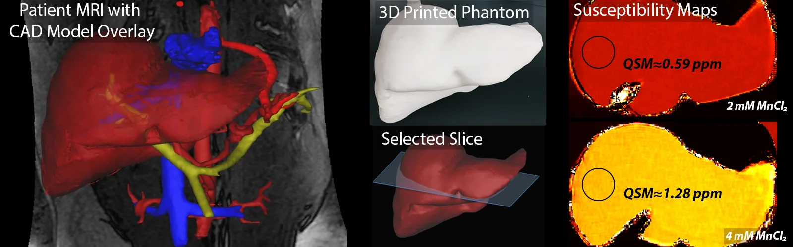

Sep 2026 - Present

Research
Undergraduate Research Assistant
Undergraduate research assistant in Prof. Diego Hernando's group at the Quantitative Imaging Methods Lab, Departments of Radiology and Medical Physics.
Undergraduate research assistant in Prof. Diego Hernando's group at the Quantitative Imaging Methods Lab (QIML), Departments of Radiology and Medical Physics at UW–Madison. Ongoing since September 2026.
About the lab
- Develops MRI methods that measure physical tissue properties, making MRI a quantitative modality.
- Core areas: multidimensional signal processing, estimation theory and algorithms, and rapid and quantitative MRI.
- Aims to produce quantitative imaging biomarkers for detecting, staging, and monitoring treatment of disease, including liver imaging.